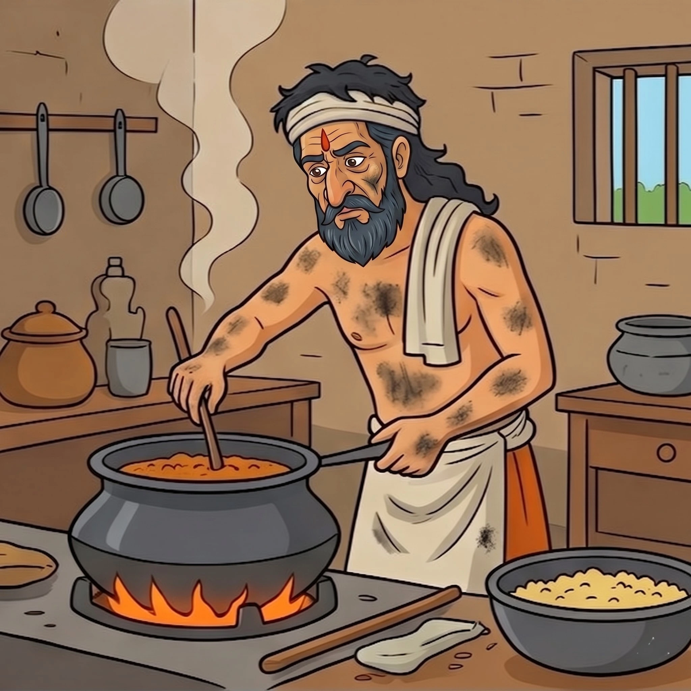

පස්වන පරිච්ඡේදය
අරක්කැමියෙකු ලෙස දුක් විඳීම
කුමරිය කෙරෙහි වූ දැඩි ප්රේමය නිසා රජ සැප අතහැර දැමූ කුස රජු, සාගල නුවරට ගොස් වෙස්වලා ගත්තේය. ඔහු කුමරියගේ සිත නැවත දිනාගැනීමේ අරමුණින් රාජකීය මුළුතැන්ගෙයි අරක්කැමියෙකු (කෝකියෙකු) ලෙස තම සිරුරේ දැලි ගාගෙන ඉතා දුක්ඛිත ජීවිතයක් ගත කළද කුමරිය ඔහුට අනුකම්පා කළේ නැත.